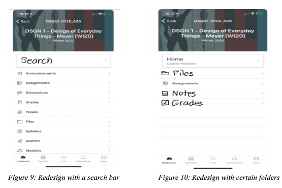

· Human-computer interaction · Cognitive Science · Computer Science
Canvas App Design
In DSGN 1 course, my team and I found out there are some mistakes happended in the Canvas App, which cause confusing for student to use it. Hence, we interviewed a selective sample of UCSD students to understand their experience with Canvas App using a master-apprentice model
Then, we utilized graphs to demonstrate the dataset and analyze the design space
The picture below is how we redesign the Canvas App on IPhone
The Trend and Problem of the Water Bottle
In DSGN 1 project, my team and I found out the trend and figured out the problem that UCSD students have in using the water bottle.
We designed interview questions and interviewed selective UCSD students. Then, we ultilized graphs to demonstrate the dataset and analyze the design space, trade off and the patterns.
For example, the graph belows that there were 8 over 10 participants that used the stainless steel water bottle because it affords versatility as users can put drinks with any temperatures in it without worrying about damaging the product